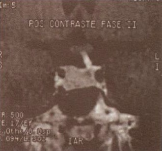

Questão 1 · Hiperprolactinemia · Hiperprolactinemia · 4000124955Medicamento que não tem potencial de causar elevação nos níveis de Prolactina sérica:
A Metildopa
B Sulpirida
C Metoclopramida
D Loratadina
Questão 2 · Hiperprolactinemia · Hiperprolactinemia · 4000114397Mulher de 27 anos cursando com amenorreia devido à hiperprolactinemia. A alternativa que apresenta opções terapêuticas adequadas ao caso é:
A dexametasona e ciproterona.
B cabergolina e bromoergocriptina.
C sulpirida e bromoprida.
D diazepam e sulpirida.
Questão 3 · Hiperprolactinemia · 4000073267Paciente de 27 anos em investigação de amenorréia e galactorréia no ambulatório de ginecologia. A prolactina sérica encontrava-se elevada (115ng/mL) e a ressonância magnética demonstrou imagem compatível com macroadenoma hipofisário. Qual a conduta mais adequada para o caso?
A Goserelina.
B Ressecção transesfenoidal.
C Radioterapia.
D Cabergolina.
E Acetato de medroxiprogesterona.
Questão 4 · Hiperprolactinemia · Roteiro diagnóstico · 4000063669Mulher de 30 anos, queixa-se de galactorréia e amenorreia há 6 semanas. Na investigação do caso, qual das opções abaixo não está indicada inicialmente?
A Prolactina sérica
B B-hcg sérico
C Tsh sérico
D RNM de sela túrcica
E Avaliação de fármacos em uso
Questão 5 · Investigação etiológica · Hiperprolactinemia · 4000062765Quanto às medicações que causam hiperprolactinemia, considere os itens a seguir. I. Risperidona. II. Domperidona. III. Haloperidol. IV. Nifedipina. Assinale a alternativa correta.
A Somente os itens I e II são corretos.
B Somente os itens I e IV são corretos.
C Somente os itens III e IV são corretos.
D Somente os itens I, II e III são corretos.
E Somente os itens II, III e IV são corretos.
Questão 6 · Tratamento · 4000123460Mulher de 30 anos interrompeu o uso de cabergolina após 2 anos de tratamento para uma macroadenoma. Atualmente, está sem terapia e apresenta-se assintomática há um ano. Refere estar grávida de 12 semanas e está preocupada com o reaparecimento do macroadenoma. Além disso, está preocupada com o eventual tratamento durante a gravidez. Nesse caso, você diz a ela que:
A a cabergolina nunca deve ser usada durante a gravidez.
B os níveis de prolactina serão verificados periodicamente durante a gravidez para acompanhar o crescimento do tumor.
C o aumento sistemático de macroadenomas pode ocorrer durante a gravidez.
D a cirurgia é obrigatória se a gravidez cursar com crescimento do prolactinoma.
E o teste de campo visual é obrigatório na gravidez para macro e microadenomas.
Questão 7 · Hiperprolactinemia · Hiperprolactinemia · 4000037227Medicamento que NÃO aumenta a prolactina é:
A Levodopa.
B Metildopa.
C Metoclopramida.
D Sulpirida.
Questão 8 · Hiperprolactinemia · Hiperprolactinemia · 4000025519Mulher de 32 anos, com amenorreia secundária, TSH = 4,5 mU/L; T4 livre = 2 ng/dL; FSH = 15 mUI/ml; estradiol = 40 pg/ml e prolactina = 60 ng/ml. Nessa paciente, a causa da amenorreia e seu provável tratamento são, respectivamente:
A hiperprolactinemia - cabergolina.
B hipotireoidismo - levotiroxina.
C síndrome dos ovários micropolicísticos - anticoncepcional hormonal.
D menopausa precoce - terapia hormonal.
Questão 9 · Hiperprolactinemia · Etiologias · Hiperprolactinemia · 4000022237Paciente de 24 anos, nuligesta, vem ao consultório ginecológico queixando-se de ausência de menstruação há 6 meses, galactorréia, cefaleia e escotomas. Qual sua hipótese diagnóstica?
A Microadenoma hipofisário;
B Macrodenoma hipofisário;
C Hipotireoidismo;
D Síndrome dos ovários policísticos;
Questão 10 · Tratamento · 4000117570Uma paciente de dezoito anos de idade procurou serviço de ginecologia endócrina com o quadro de amenorreia secundária associado à galactorreia e à diminuição de campo visual. A dosagem de prolactina encontrava-se normal, entretanto, na ressonância nuclear magnética, observou-se grande tumor hipo sário com a compressão do quiasma óptico. Considerando essa situação hipotética, assinale a alternativa que apresenta a conduta mais adequada para o diagnóstico da paciente:
A Repetir a prolactina em três meses.
B Solicitar uma biópsia de hipófise.
C Solicitar a diluição da amostra por se tratar de efeito gancho.
D Solicitar a dosagem da macroprolactina.
E Solicitar a cromatografia em coluna de gel-filtração.
Questão 11 · Diagnóstico · Investigação etiológica · 4000104919Mulher de 42 anos procura médico de família muito preocupada com o resultado de exame de rotina, que mostrou prolactina aumentada (PRL = 48 ng/mL). A paciente nega irregularidade menstrual e galactorreia. Refere duas gestações prévias sem intercorrências. Baseando-se nesses dados, é correto afirmar que a melhor conduta diagnóstica é solicitar:
A TSH e avaliar uso de drogas que aumentem a PRL
B ultrassonografia transvaginal e testosterona
C tomografia de crânio e sela túrcica
D teste do progestágeno e FSH
Questão 12 · Hiperprolactinemia · Hiperprolactinemia · 4000101826A hiperprolactinemia pode estar relacionada a todos os listados abaixo, EXCETO
A hipotireoidismo.
B amenorreia.
C neoplasia de colo uterino.
D adenoma de hipófise.
Questão 13 · Hiperprolactinemia · Hiperprolactinemia · 4000096330Em relação à prolactina, assinale a alternativa INCORRETA.
A Não há relação entre hiperprolactinemia e infertilidade.
B Os níveis de prolactina podem estar aumentados em pacientes portadoras de insuficiência renal crônica.
C A gordura visceral de mulheres obesas tem relação direta com a maior produção de prolactina.
D A dopamina é potente inibidor da liberação de prolactina.
Questão 14 · Diagnóstico · Investigação etiológica · 4000071500Sobre hiperprolactinemia, é correto afirmar: afirmar o seguinte:
A O uso de fármacos é uma causa rara para o aumento da prolactina.
B Na hiperprolactinemia da mulher está sempre presente galactorreia ou amenorreia.
C Uma dosagem de prolactina aumentada deve ser confirmada, pois sua liberação é pulsátil e variável ao longo do dia.
D Ressonância nuclear magnética deve ser solicitada sempre.
E Toda paciente com hiperprolactinemia deve ser avaliada pelo neurologista.
Questão 15 · Tratamento · 4000068862Numa paciente de 25 anos com microprolactinoma (tumor de 7 mmm), em tratamento com cabergolina 0,5 mg (1 ep 2 vezes por semana) que refere estar grávida de 6 semanas, qual a melhor conduta?
A Manter a dose de cabergolina
B Reduzir a dose pela metade
C Aumentar a dose
D Suspender a cabergolida
E Trocar cabergolida pela bromocriptina
Questão 16 · Hiperprolactinemia · Eixo hipotálamohipof isário · 4000119321Em relação ao metabolismo da prolactina é correto afirmar que:
A dopamina e GABA são os principais fatores liberadores da prolactina
B dopamina é a principal reguladora da prolactina, inibindo sua liberação.
C a prolactina exerce ação sobre o gnrh, estimulando o pulso de FSH e o LH.
D a prolactina de molécula pequena é a menos ativa biologicamente
Questão 17 · Tratamento · Diagnóstico · Investigação etiológica · 4000105723Em relação à hiperprolactinemia, assinale alternativa INCORRETA:
A A hiperprolactinemia deve ser investigada em mulheres frente à ocorrência de oligomenorreia, amenorreia, galactorreia ou infertilidade.
B Na investigação de possível hiperprolactinemia, deve-se dosar o hormônio estimulador da tireoide (TSH) e proceder a exames bioquímicos de função renal e hepática, para que sejam afastados, respectivamente, hipotiroidismo primário, insuficiência renal e insuficiência hepática.
C Uma vez confirmada a hiperprolactinemia e afastadas as causas secundárias, a paciente deve então ser submetida à RM de hipófise para a pesquisa do prolactinoma.
D Pela melhor tolerância das pacientes, a cabergolina é considerada superior à bromocriptina no tratamento da hiperprolactinemia.
E A cirurgia é o tratamento de escolha quando for constatada a presença de microprolactinomas e macroadenomas pequenos.
Questão 18 · Tratamento · 4000097283Em paciente com hiperprolactinemia decorrente de microadenoma de hipófise, indica-se como primeira opção:
A Radioterapia.
B Cirurgia para remoção do adenoma.
C Agonista dopaminérgico.
D Antagonista de serotonina.
Questão 19 · Tratamento · Hiperprolactinemia · 4000085581Mulher, 28 anos, apresenta irregularidade menstrual há 14 meses. Queixa que último ciclo menstrual foi há quatro meses. Nuligesta. Beta hCG negativo. Exame físico: estágios de Tanner: M5 / P5. PA = 110 x 70 mmHg, Peso: 64kg, Altura: 1,65m. Há descarga papilar espontânea, bilateral, esbranquiçada. Restante do exame físico sem alterações. O tratamento adequado, uma vez confirmada sua impressão diagnóstica, é:
A Inibidores seletivos da receptação da serotonina.
B Etinilestradiol associado a drospirenona.
C Tamoxifeno.
D Valerato de estradiol.
E Agonistas da dopamina.
Questão 20 · Diagnóstico · 4000030352Paciente de 25 anos com irregularidade mestrual e prolactina sérica de 80 ng/ml NÃO necessita inicialmente de qual medida?
A Pesquisa de adenoma hipofisário por ressonância nuclear magnética.
B Repetir o exame.
C Pesquisar causa medicamentosa.
D Solicitar TSH.
Questão 21 · Investigação etiológica · 4000000175Não se considera como causa fisiológica da hiperprolactinemia:
A Sono.
B Ovulação.
C Coito.
D Manipulação mamária.
Questão 22 · Hiperprolactinemia · Acromegalia · 4000095423Qual o achado semiológico mais característico encontraríamos no paciente com uma massa hipofisária e hipotalâmica?
A Hemianopsia bitemporal.
B Hemianopsia binasal.
C Anosmia.
D Escotoma central.
Questão 23 · Investigação etiológica · Hiperprolactinemia · 4000087691Qual a causa mais comum de hiperprolactinemia não fisiológica?
A Medicamentosa.
B Adenoma hipofisário.
C Hipotireoidismo.
D Idiopática.
E Doença crônica.
Questão 24 · Tratamento · 4000061277NÃO é um critério para tratamento da hiperprolactinemia:
A Galactorreia espontânea.
B Prolactinemia superior a 40 ng/Ml.
C Sintomas neurológicos do adenoma.
D Hipogonadismo.
E Infertilidade.
Questão 25 · Hiperprolactinemia · Hiperprolactinemia · 4000048973Mulher, 36 anos de idade, usuária de DIU de cobre, com queixa de galactorreia hiperprolactinemica há 3 meses. Em relação às ações na avaliação propedêutica, considere as afirmativas a seguir. I. Avaliação da hipófise posterior. II. Avaliação da função hepática. III. Avaliação da função renal. IV. Pesquisa de ovários policísticos. Assinale a alternativa correta.
A Somente as afirmativas I e II são corretas.
B Somente as afirmativas I e IV são corretas.
C Somente as afirmativas III e IV são corretas.
D Somente as afirmativas I, II e III são corretas.
E Somente as afirmativas II, III e IV são corretas.
Questão 26 · Tipos e causas · Hiperprolactinemia · Tratamento · 4000028348São fármacos relacionados com a galactorréia, EXCETO:
A Antidepressivos tricíclicos, Inibidores da receptação de serotonina, codeína e sulpirida.
B Verapamil, Metildopa, Reserpina.
C Estrogênio, anticoncepcional oral, hormônio tireoideano.
D Inibidores de ECA, diuréticos, ß-bloqueadores.
Questão 27 · Investigação etiológica · Hiperprolactinemia · 4000109560A prolactina elevada pode estar relacionada
A A melasma.
B A varizes de mmii.
C À inapetência.
D À sonolência.
E À diminuição da libido.
Questão 28 · Diagnóstico · Hiperprolactinemia · 4000083412M. C. F. S., 20 anos, refere irregularidades menstruais há aproximadamente 1 ano. Procurou assistência médica, onde a expressão das mamas evidenciou galactorreia. O nível sérico de prolactina foi de 125ng/ml. Qual a conduta mais adequada para esta paciente?
A Iniciar cabergolina 0,5mg via oral a cada 21 dias;
B Solicitar RX de sela túrcica e iniciar bromoergocriptina 2,5mg via oral por dia para regularizar as menstruações;
C Solicitar tomografia computadorizada de sela túrcica;
D Solicitar RX de sela túrcica e iniciar cabergolina 0,5mg via oral a cada 21 dias;
Questão 29 · Hiperprolactinemia · Diagnóstico · Armadilhas laboratoriais · 4000080662Paciente do sexo feminino, 32 anos de idade, há 2 meses foi investigada por atraso menstrual de 60 dias. Até então seus ciclos menstruais eram eumenorreicos, não apresentava antecedentes pessoais clínicos e cirúrgicos e não fazia uso de qualquer tipo de medicação. As dosagens séricas de FSH, LH, estradiol, TSH e T4 livre encontravam-se dentro dos valores de normalidade, porém o valor da prolactina foi de 68 ng/ml. Foi iniciado tratamento com bromocriptina 7,5 mg via oral por dia durante 4 semanas. Nova dosagem de prolactina foi feita e resultou em 51 ng/ml. Diante este resultado solicitou-se a recuperação de macroprolactina cujo resultado foi 23%. Sobre a macroprolactina é incorreto afirmar: I. A principal indicação de sua recuperação é na vigência de hiperprolactinemia idiopática. II. Mulheres com recuperação de macroprolactina inferiores a 17% têm maior dificuldade para engravidar. III. A melhor indicação para ressonância magnética de sela túrcica é em pacientes com recuperação de macroprolactina superiores a 60%. IV. É um complexo de small prolactina ligado a anticorpo antiprolactina adquirindo alto peso molecular. V. Em pacientes com recuperação de macroprolactina inferiores a 30% a melhor indicação terapêutica é a cabergolina. A seguinte alternativa contempla o solicitado no enunciado:
A I, II,III e V.
B I, II e V.
C II, III e IV.
D II, III e V.
E III, IV e V.
Questão 30 · Hiperprolactinemia · Hiperprolactinemia · 4000010706Mulher de 22 anos apresenta ciclos menstruais irregulares há cerca de 10 meses, com períodos de amenorreia, negando uso de medicamentos. Sem parceiros sexuais há 2 anos. Exame físico geral e ginecológico normais. A dosagem de prolactina está elevada (150 ng/dl) com TSH e T4 livre normais. A ressonância magnética de sela túrcica revelou um macroadenoma hipofisário. A conduta é
A Uso de agonistas da dopamina.
B Uso de agonistas do GnRH.
C Uso de contraceptivos hormonais orais.
D Cirurgia.
E Radioterapia.
Questão 31 · Investigação etiológica · 4000102290Mulher, 36 anos de idade. G3P3A0C0. HMA: procurou ginecologista devido à irregularidade menstrual iniciada há 2 anos. Antes apresentava ciclos regulares com intervalos de 30 dias e duração de 4 dias. Nega outras queixas associadas. EF: normal. EG: Tro smo genital preservado, sem outras alterações. Mamas: M5, com expressão positiva bilateralmente de secreção leitosa multiductal. ES: Dosagem de Prolactina = 150 ng/ml (VN = 5 a 25 ng/ml), FSH = 6,8 mUI/ml (VN = 2,8 a 14 mUI/ml). As etiologias mais frequentes desta condição são:
A Hipotireoidismo; adenoma hipofisário e efeito colateral de medicamentos.
B Adenoma hipofisário; Síndrome dos ovários policísticos e ectasia ductal.
C Tumores extrasselares de SNC; Síndrome dos ovários policísticos e doença autoimune.
D Hipertireoidismo; Tumores de SNC e efeito colateral de medicamentos.
Questão 32 · Diagnóstico · 4000096969Mulher de 32 anos de idade queixa-se de saída de secreção esbranquiçada dos mamilos há 6 meses. Refere que o uxo é bilateral e só sai quando faz a expressão dos mamilos. O ciclo menstrual está irregular. A dosagem da prolactina foi de 220 microgramas/L (normal até 15 microgramas/L). Qual deve ser a conduta nesse momento?
A ultrassonografia de mamas.
B ressonância magnética de sela turca.
C prescrever carbegolina por via oral.
D prescrever bromoergocriptina por via oral.
Questão 33 · Def inição e epidemiologia · 4000043538Das alternativas abaixo, qual o tumor hipofisário funcionante mais comum?
A Secretor de GH.
B Secretor de ACTH.
C Secretor de LH.
D Secretor de TSH.
E Secretor de prolactina.
Questão 34 · Investigação etiológica · 4000066045NÃO é causa de hiperprolactinemia o uso de:
A Ácido fólico
B Metoclopramida
C Verapamil
D Fluoxetina
E Metildopa
Questão 35 · Diagnóstico · 4000087280Paciente de 34 anos apresentou galactorreia bilateral espontânea e amenorreia após a suspensão do uso de anticoncepcional oral. A investigação hormonal demonstrou T4, TSH e andrógenos normais e prolactina de 680 ng/ml (valor de referência: até 18 ng/ml). A ressonância magnética da hipó se em T1, no plano coronal após o uso de gadolínio, está reproduzida abaixo. Qual a hipótese diagnóstica mais provável?

A Hipotireoidismo primário com hipófise normal e dosagens hormonais mascaradas pelo uso de anticoncepcional oral.
B Macroadenoma hipofisário não secretor associado à hiperprolactinemia funcional.
C Macroadenoma hipofisário produtor de prolactina.
D Galactorreia e amenorreia decorrentes de hiperprolactinemia funcional e sela túrcica vazia.
E Galactorreia e amenorreia decorrentes de hiperprolactinemia associada a craniofaringeoma.
Questão 36 · Hipotireoidismo · Investigação etiológica · 4000081034Mulher, 20 anos, com galactorreia bilateral e ciclos menstruais normais. Deve-se dosar:
A estradiol
B LH
C FSH
D TSH
Questão 37 · Diagnóstico · Investigação etiológica · 4000057916Mulher, 23 anos, sem comorbidades prévias, relata que há 3 meses tem notado as mamas ingurgitadas e com secreção láctea. Os ciclos menstruais estão irregulares e também refere que tem dormido mais que o habitual. Está incomodada com a constipação e relaciona isso com o ganho de 7 kg neste período. Disse que já fez 3 testes de farmácia para gravidez e todos foram negativos. O exame físico é normal. Ela traz exames laboratoriais pedidos pela prima que é pediatra e tem Beta HGC negativo e Prolactina 1200 mcg/L. O primeiro passo a seguir é:
A Iniciar bromocriptina ou cabergolina.
B Dosar TSH ultrassensível e T4 livre.
C Dosar FH, LSH e estradiol E2.
D Fazer RM crânio e hipófise.
Questão 38 · Investigação etiológica · 4000069363Nos casos de hiperprolactinemia, deve-se sempre investigar o uso de drogas farmacológicas que podem ser responsáveis pelo aumento da concentração plasmática de prolactina, induzindo ao surgimento de galactorreia e de alterações menstruais. São exemplos destes tipos de medicamentos as seguintes substâncias:
A reserpina e sulpirida.
B haloperidol e lisurida.
C cabergolina e cimetidina.
D diclofenaco e promazina.
Questão 39 · Hiperprolactinemia · 4000010432Os mecanismos da hipofunção gonadal provocada pela hiperprolactinemia é: Respostas: 1 12 23 34
A a diminuição na produção de dopamina.
B o aumento das células da teça e maior produção androgênica.
C o aumento da produção de 17-b-estradiol, por interferência da ação do FSH na granulosa.
D a suspensão da atividade pulsátil do GnRH e luteinização inadequada.
E a hiperatividade da enzima 21-hidroxilase, com redução do número de células da granulosa.